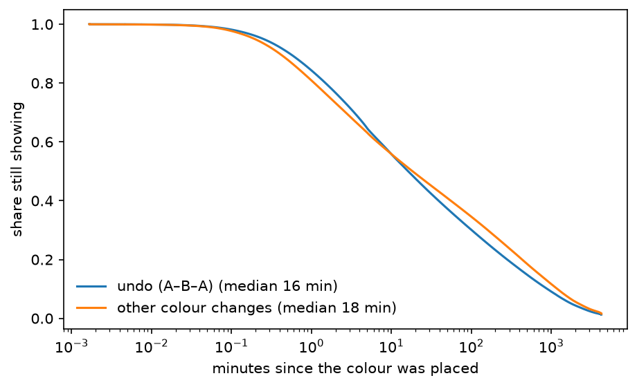
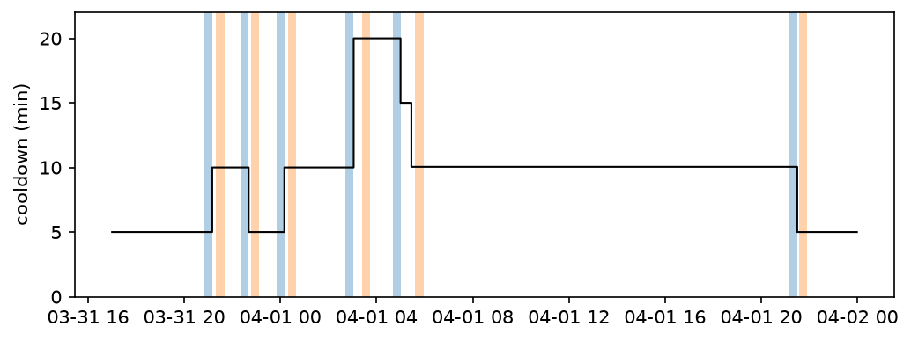
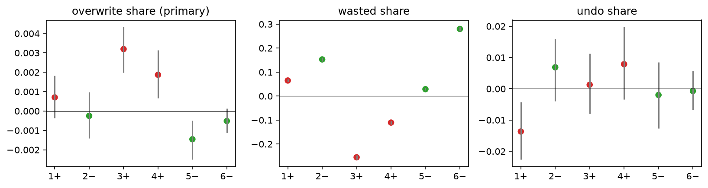

import numpy as np
import polars as pl
import matplotlib.pyplot as plt
import rplace17 as r
h = r.pixel_history(r.load()) # the whole log, so each pixel's state is right at every time
close_us = h["t_us"].max()
live = h.filter(pl.col("t_us") >= r.LAUNCH_US)3 Pixels
A pixel is the smallest place on the canvas where people meet. Its history is a sequence of colours, each placed by someone, each lasting until someone paints over it. This chapter asks what single placements do to their pixel, how long a colour survives, and, using the changes in the waiting rule found in Chapter 2, whether a longer wait changed how people placed.
3.1 What one placement does
Every placement lands on a pixel that already has a colour (white, if nobody has touched it). Relative to that, a placement can do one of a few things:
- wasted: repaint the colour the pixel already has (Wu and Silva 2024, v3, §5.1: “an update that repaints a pixel with its current color”). Nothing visible changes.
- first: the first placement ever on that pixel.
- overwrite: change a colour that a different account placed last.
- undo: restore the colour the pixel had just before its current one (the second A in A–B–A), whoever does it. It need not be the account that placed A; below we check how often it is.
Here is one pixel’s history, with these labels (accounts shown only as “same as the last placer or not”):
one = (h.filter((pl.col("x") == 500) & (pl.col("y") == 500) & (pl.col("t_us") >= r.LAUNCH_US)).head(8)
.with_columns(pl.from_epoch("t_us", time_unit="us").dt.strftime("%m-%d %H:%M:%S").alias("time"),
(pl.col("prev_user") == pl.col("user_id")).alias("same account as last"))
.select("time", "prev_color", "color", "same account as last", "wasted", "overwrite", "undo"))
r.table(one)| time | prev_color | color | same account as last | wasted | overwrite | undo |
|---|---|---|---|---|---|---|
| 03-31 17:00:27 | 3 | 6 | False | False | True | False |
| 03-31 17:00:27 | 6 | 13 | False | False | True | False |
| 03-31 17:05:24 | 13 | 11 | False | False | True | False |
| 03-31 17:05:56 | 11 | 5 | False | False | True | False |
| 03-31 17:07:03 | 5 | 10 | False | False | True | False |
| 03-31 17:07:36 | 10 | 3 | False | False | True | False |
| 03-31 17:08:31 | 3 | 5 | False | False | True | False |
| 03-31 17:10:46 | 5 | 0 | False | False | True | False |
Across the event:
changes = live.filter(~pl.col("wasted"))
summary = {
"placements": f"{live.height:,}",
"wasted": f"{live['wasted'].mean():.1%}",
"first on the pixel": f"{live['first'].mean():.1%}",
"overwrite, of colour changes after the first": f"{changes.filter(~pl.col('first'))['overwrite'].mean():.1%}",
"undo, of colour changes": f"{changes['undo'].drop_nulls().mean():.1%}",
}
r.table(pl.DataFrame([summary]))| placements | wasted | first on the pixel | overwrite, of colour changes after the first | undo, of colour changes |
|---|---|---|---|---|
| 16,559,298 | 26.4% | 6.0% | 99.7% | 61.6% |
Two things stand out. About a quarter of all placements change nothing at all. And when a placement does change a colour, it almost always changes one that someone else placed, and more than half the time it puts back the colour from just before. Who does the putting back?
ch = (h.filter(~pl.col("wasted"))
.with_columns((pl.col("x").cast(pl.Int32) * r.SIZE + pl.col("y").cast(pl.Int32)).alias("pix"))
.with_row_index("i").sort("pix", "t_us", "i")
.with_columns(pl.col("user_id").shift(2).over("pix").alias("placed_restored")))
undos = ch.filter((pl.col("undo") == True) & (pl.col("t_us") >= r.LAUNCH_US))
self_restore = (undos["placed_restored"] == undos["user_id"]).mean()
print(f"undos: {undos.height:,}; restorer had placed the restored colour itself: {self_restore:.1%}")undos: 6,896,313; restorer had placed the restored colour itself: 5.4%Only 5.4% of undos are an account putting back its own colour. The rest are other accounts restoring a colour someone else placed: defence by a relay of people, which is what Chapter 2 suggested a pixel held “all day” would need. A pixel that changes is usually being fought over, often by the same two colours going back and forth, with different people on each side taking turns.
3.1.1 Which placements are still visible at the end?
Wu and Silva (2024, v3, §4.1) sort placements by their relation to the final picture: Final (persists to the close), Match (the colour of the final picture, but later overwritten) and Adversarial (a colour that differs from the final picture). Their final picture is an artwork; ours is simply each pixel’s last colour, so these are pixel-level versions of their categories.
final = h.group_by("x", "y").agg(pl.col("color").last().alias("final_color"), pl.col("t_us").max().alias("t_last"))
cat = (live.join(final, on=["x", "y"])
.with_columns(pl.when(pl.col("t_us") == pl.col("t_last")).then(pl.lit("Final"))
.when(pl.col("color") == pl.col("final_color")).then(pl.lit("Match"))
.otherwise(pl.lit("Adversarial")).alias("category")))
shares = cat.group_by("category").len().with_columns((pl.col("len") / pl.col("len").sum()).alias("share")).sort("share")
final_share = shares.filter(pl.col("category") == "Final")["share"][0]
r.table(shares.select("category", pl.col("len").map_elements(lambda v: f"{v:,}", return_dtype=pl.Utf8).alias("placements"),
pl.col("share").map_elements(lambda v: f"{v:.1%}", return_dtype=pl.Utf8)))| category | placements | share |
|---|---|---|
| Final | 998,998 | 6.0% |
| Match | 6,557,040 | 39.6% |
| Adversarial | 9,003,260 | 54.4% |
Only 6.0% of placements are Final, in line with Wu and Silva’s “under 7%”. (Placements at the same microsecond on the same pixel can make its last placement ambiguous; they are rare.)
3.2 How long does a colour last?
A colour’s lifetime runs from the placement that set it to the next placement that changes it; wasted repaints do not end it. Colours still visible at the close are censored: we know only that they lasted at least until then. The Kaplan–Meier estimator handles that correctly.
states = (h.filter(~pl.col("wasted"))
.with_columns((pl.col("x").cast(pl.Int32) * r.SIZE + pl.col("y").cast(pl.Int32)).alias("pix"))
.sort("pix", "t_us")
.with_columns(pl.col("t_us").shift(-1).over("pix").alias("t_next")))
states = states.filter(pl.col("t_us") >= r.LAUNCH_US).with_columns(
((pl.col("t_next").fill_null(close_us) - pl.col("t_us")) / 1e6).alias("lifetime_s"),
pl.col("t_next").is_not_null().alias("ended"))
print(f"{states.height:,} colour states; still visible at the close (censored): {(~states['ended']).mean():.1%}")12,180,897 colour states; still visible at the close (censored): 8.2%medians = {}
fig, ax = plt.subplots(figsize=(7, 4))
for label, sub in (("undo (A–B–A)", states.filter(pl.col("undo") == True)),
("other colour changes", states.filter(pl.col("undo") != True))):
t, S = r.kaplan_meier(sub["lifetime_s"].to_numpy(), sub["ended"].to_numpy())
medians[label] = t[np.argmax(S <= 0.5)] / 60
ax.step(np.maximum(t, 0.1) / 60, S, where="post", label=f"{label} (median {medians[label]:.0f} min)")
ax.set_xscale("log"); ax.set_xlabel("minutes since the colour was placed"); ax.set_ylabel("share still showing")
ax.legend(frameon=False)
plt.show()
The two curves cross at about ten minutes. A colour that undoes a change holds slightly better at first, then worse: medians of 16 and 18 minutes. One reading is that a repair buys a short respite before the fight over that pixel resumes. This is a description with no null yet. The planned null shuffles times within each pixel, which keeps how busy each pixel is and removes any memory.
3.3 Did a longer wait change how people placed?
Chapter 2 found that Reddit changed the wait seven times, for everyone at once. That is a natural experiment: the same people and canvas, a different speed limit. A longer wait must lower how often each person places (mechanical). The question is whether it also changed what people did with each placement (behavioural).
The test was written down before any outcome was computed, though not before the data were familiar: the switch times themselves came from the log, in Chapter 2. The timestamp protects against choosing the outcome after seeing it, not against knowing the data. The test: prereg/03-cooldown-switches.md and its amendment, which merges two switches 27 minutes apart (they shared a window) into one, leaving six. In short:
- compare 20-minute windows just before and just after each switch (skipping the first cooldown after it);
- primary outcome: the overwrite share; secondary and exploratory: the wasted and undo shares;
- test: does the change have the sign that matches the direction of the switch (tighter or looser) at every switch? An exact sign-flip test over the \(2^6 = 64\) sign assignments, so the smallest possible p is 2/64 = 0.031;
- controls: a positive control that must pass, a pre-trend check, a placebo at times with no switch, and the same accounts on both sides.
win = r.switch_windows(r.SWITCHES, 20)
grid = np.arange(r.LAUNCH_US, r._us("2017-04-02 00:00"), 60_000_000)
fig, ax = plt.subplots(figsize=(8, 2.8))
ax.step(grid.astype("datetime64[us]"), r.cooldown_at(grid) / 60, where="post", color="black", lw=1)
for row in win.filter(pl.col("side") != "pre2").iter_rows(named=True):
ax.axvspan(np.datetime64(row["lo"], "us"), np.datetime64(row["hi"], "us"),
color="tab:blue" if row["side"] == "before" else "tab:orange", alpha=0.35, lw=0)
ax.set_ylabel("cooldown (min)"); ax.set_ylim(0, 22)
plt.show()
def compare(switches, W=20, same_people=False, ci=False, hist=h):
win = r.switch_windows(switches, W)
res = {(x["k"], x["side"]): x for x in r.window_outcomes(hist, win)}
if same_people:
both = {k: set(res[(k, "before")]["per_account"]["user_id"]) & set(res[(k, "after")]["per_account"]["user_id"])
for k in range(1, len(switches) + 1)}
res = {(x["k"], x["side"]): x for x in r.window_outcomes(hist, win, both)}
rows = []
for k in range(1, len(switches) + 1):
b, a, p2 = res[(k, "before")], res[(k, "after")], res[(k, "pre2")]
rate = lambda x: x["placements"] / max(x["accounts"], 1) / W # placements per active account per minute
row = {"k": k, "direction": b["direction"], "placements before": b["placements"], "placements after": a["placements"],
"accounts before": b["accounts"], "accounts after": a["accounts"],
"M1_d": rate(a) - rate(b), "M1_pre": rate(b) - rate(p2)}
for name in r.OUTCOMES:
sb, sa, sp = (r.share(x["per_account"], name) for x in (b, a, p2))
row |= {f"{name}_before": sb, f"{name}_after": sa, f"{name}_d": sa - sb, f"{name}_pre": sb - sp}
if ci:
lo, hi = r.boot_delta(b["per_account"], a["per_account"], name)
row |= {f"{name}_lo": lo, f"{name}_hi": hi}
rows.append(row)
return pl.DataFrame(rows)
def test(t, name):
d, dirs = t[f"{name}_d"].to_numpy(), t["direction"].to_numpy()
p = r.sign_flip_p(d, dirs)[1]
flagged = np.abs(t[f"{name}_pre"].to_numpy()) > np.abs(d) / 2
p_keep = r.sign_flip_p(d[~flagged], dirs[~flagged])[1] if (~flagged).any() else float("nan")
T = float(np.sum(dirs * d))
agree = int((np.sign(dirs * d) == np.sign(T)).sum()) # switches whose change has the same sign as T
return {"outcome": name, "sign of T": "+" if T > 0 else "−", "switches agreeing": f"{agree}/{len(d)}", "p": f"{p:.3f}",
"pre-trend flagged": ", ".join(str(k) for k in t["k"].to_numpy()[flagged]) or "none",
"p without flagged": f"{p_keep:.3f}"}
main = compare(r.SWITCHES, 20, ci=True)
r.table(main.select("k", "direction", "placements before", "placements after", "accounts before", "accounts after"))| k | direction | placements before | placements after | accounts before | accounts after |
|---|---|---|---|---|---|
| 1 | 1 | 72155 | 46215 | 46055 | 38286 |
| 2 | -1 | 39240 | 56886 | 32200 | 32965 |
| 3 | 1 | 58076 | 37539 | 33148 | 30145 |
| 4 | 1 | 34587 | 22226 | 27494 | 22131 |
| 5 | -1 | 22463 | 30002 | 22459 | 23335 |
| 6 | -1 | 75340 | 118912 | 58510 | 61508 |
Every window has tens of thousands of placements. In the window before switch 5 (the twenty-minute wait) each active account placed exactly once, the most the rule allowed.
3.3.1 The positive control
If the windows and the schedule are right, placements per active account per minute (M1) must fall after every tightening and rise after every loosening, so T must be negative with all six switches agreeing. If this failed, nothing else could be trusted. (In these tables, T = Σ direction × change: positive when an outcome rises after tightenings and falls after loosenings.)
r.table(pl.DataFrame([test(main, "M1")]))| outcome | sign of T | switches agreeing | p | pre-trend flagged | p without flagged |
|---|---|---|---|---|---|
| M1 | − | 6/6 | 0.031 | 1 | 0.062 |
It passes at every switch, with the smallest p the test can give. Switch 1 is flagged by the pre-trend check: in the hours after launch, activity per account was already falling as the first surge faded.
3.3.2 The result
fmt = lambda v: f"{v:+.4f}" if v < 0 or v > 0 else "0"
r.table(main.select("k", "direction",
*[pl.col(f"overwrite_{c}").map_elements(lambda v: f"{v:.4f}", return_dtype=pl.Utf8).alias(f"overwrite {c}")
for c in ("before", "after")],
*[pl.col(f"overwrite_{c}").map_elements(fmt, return_dtype=pl.Utf8).alias(f"change {c}".replace("change d", "change"))
for c in ("d", "lo", "hi")]))| k | direction | overwrite before | overwrite after | change | change lo | change hi |
|---|---|---|---|---|---|---|
| 1 | 1 | 0.9961 | 0.9968 | +0.0007 | -0.0004 | +0.0018 |
| 2 | -1 | 0.9966 | 0.9964 | -0.0002 | -0.0014 | +0.0010 |
| 3 | 1 | 0.9944 | 0.9976 | +0.0032 | +0.0020 | +0.0043 |
| 4 | 1 | 0.9958 | 0.9977 | +0.0019 | +0.0007 | +0.0031 |
| 5 | -1 | 0.9982 | 0.9967 | -0.0015 | -0.0025 | -0.0005 |
| 6 | -1 | 0.9974 | 0.9969 | -0.0005 | -0.0011 | +0.0001 |
r.table(pl.DataFrame([test(main, n) for n in r.OUTCOMES]))| outcome | sign of T | switches agreeing | p | pre-trend flagged | p without flagged |
|---|---|---|---|---|---|
| overwrite | + | 6/6 | 0.031 | 1, 2, 6 | 0.250 |
| wasted | − | 5/6 | 0.094 | none | 0.094 |
| undo | − | 2/6 | 0.750 | 1, 2, 3, 4, 6 | 1.000 |
fig, axes = plt.subplots(1, 3, figsize=(11, 3))
x = np.arange(1, 7)
col = np.where(main["direction"].to_numpy() > 0, "tab:red", "tab:green")
for ax, name in zip(axes, r.OUTCOMES):
dd = main[f"{name}_d"].to_numpy()
ax.errorbar(x, dd, yerr=[dd - main[f"{name}_lo"].to_numpy(), main[f"{name}_hi"].to_numpy() - dd], fmt="none", ecolor="grey")
ax.scatter(x, dd, c=col)
ax.axhline(0, color="black", lw=0.6)
ax.set_title(f"{name} share" + (" (primary)" if name == "overwrite" else ""))
ax.set_xticks(x, [f"{k}{'+' if d > 0 else '−'}" for k, d in zip(x, main["direction"])])
plt.tight_layout(); plt.show()
The pre-registered test passes, with a caveat attached. The overwrite share moved in the direction-consistent way at all six switches: it rose after every tightening and fell after every loosening (p = 0.031, the smallest possible). But at three of the six switches (1, 2 and 6) the change across the switch is less than twice the drift just before it, which the pre-registration flags; without them the test cannot reach significance (p = 0.25). The secondary outcomes do not pass. The wasted share swings strongly, by up to tens of percentage points: it fell after two of the three tightenings and rose after all three loosenings (not significant, and exploratory by design). The undo share shows nothing.
3.3.3 The controls
checks = []
for label, t in (("main, W = 20", main), ("same accounts on both sides", compare(r.SWITCHES, 20, same_people=True)),
("W = 10", compare(r.SWITCHES, 10)), ("W = 40", compare(r.SWITCHES, 40)),
("placebo (no switch)", compare(r.PLACEBO, 20))):
checks.append({"comparison": label, **test(t, "overwrite")})
r.table(pl.DataFrame(checks).drop("outcome"))| comparison | sign of T | switches agreeing | p | pre-trend flagged | p without flagged |
|---|---|---|---|---|---|
| main, W = 20 | + | 6/6 | 0.031 | 1, 2, 6 | 0.250 |
| same accounts on both sides | + | 6/6 | 0.031 | 1, 6 | 0.125 |
| W = 10 | + | 6/6 | 0.031 | 1, 2, 3, 4 | 0.500 |
| W = 40 | + | 6/6 | 0.031 | none | 0.031 |
| placebo (no switch) | + | 5/6 | 0.281 | 1, 3, 4, 5, 6 | 1.000 |
- Same accounts, other windows: the result holds when only accounts present on both sides are used, and at windows of 10 and 40 minutes.
- Pre-trend: at W = 20 three switches are flagged, because the change across them is less than twice the drift just before. Without them only three switches remain, too few for the test to reach significance. At W = 40 none is flagged.
- Placebo: at times with no switch the test is not significant, but the changes there agree in sign at 5 of the 6 pseudo-switches. With changes this small, that is uncomfortable.
3.3.4 What it means, and what it does not
On the scale of the overwrite share, which sits near 99.6%, the change is 0.1 to 0.3 percentage points and hard to read. Its complement is easier: the share of colour changes in which an account changes its own last placement.
ht = r.with_timing(h)
def own_table(switches, W=20):
win = r.switch_windows(switches, W)
out = {}
for row in win.filter(pl.col("side") != "pre2").iter_rows(named=True):
w = ht.filter(pl.col("t_us").is_between(row["lo"], row["hi"], closed="left"))
out[(row["k"], row["side"])] = r.own_and_intact(w)
rows = []
for k, (_, _, _, direction) in enumerate(switches, start=1):
(ob, nb, fb), (oa, na, fa) = out[(k, "before")], out[(k, "after")]
sb, sa = ob / nb, oa / na
predicted = sb * fa / fb # same intent, scaled by how often one's colour was still intact
rows.append({"k": k, "direction": direction, "own before": f"{ob} / {nb:,} = {sb:.2%}",
"own after": f"{oa} / {na:,} = {sa:.2%}", "odds ratio": f"{(sa / (1 - sa)) / (sb / (1 - sb)):.2f}",
"intact before": f"{fb:.3f}", "intact after": f"{fa:.3f}", "predicted after": f"{predicted:.2%}",
"_d": 100 * (sa - sb), "_resid": 100 * (sa - predicted)})
return pl.DataFrame(rows)
own = own_table(r.SWITCHES)
r.table(own.drop("_d", "_resid"))| k | direction | own before | own after | odds ratio | intact before | intact after | predicted after |
|---|---|---|---|---|---|---|---|
| 1 | 1 | 125 / 32,419 = 0.39% | 62 / 19,677 = 0.32% | 0.82 | 0.631 | 0.586 | 0.36% |
| 2 | -1 | 66 / 19,516 = 0.34% | 103 / 28,366 = 0.36% | 1.07 | 0.587 | 0.648 | 0.37% |
| 3 | 1 | 155 / 27,685 = 0.56% | 49 / 20,390 = 0.24% | 0.43 | 0.663 | 0.622 | 0.53% |
| 4 | 1 | 79 / 18,919 = 0.42% | 30 / 13,007 = 0.23% | 0.55 | 0.618 | 0.560 | 0.38% |
| 5 | -1 | 27 / 14,891 = 0.18% | 67 / 20,497 = 0.33% | 1.81 | 0.545 | 0.627 | 0.21% |
| 6 | -1 | 129 / 49,161 = 0.26% | 229 / 72,969 = 0.31% | 1.20 | 0.533 | 0.601 | 0.30% |
On this scale the change is large in relative terms: after the tightenings, changes to one’s own pixel fell to about half (odds ratios down to 0.43), and after the loosenings they rose. The counts are small, though: tens to a couple of hundred such changes per window.
A mechanical explanation. To change your own pixel again, you must come back to it before anyone else changes it. A longer wait gives others more time to get there first. (It also makes everyone place less, which works the other way.) The columns intact before and intact after measure this directly: of the colours placed in a window, the share still intact when the account that placed them next placed anything. If people’s intentions did not change, the share of own-pixel changes should move in proportion: that is the predicted after column.
dirs = own["direction"].to_numpy()
placebo_own = own_table(r.PLACEBO)
resid_T, resid_p = r.sign_flip_p(own["_resid"].to_numpy(), dirs)
adj = own["_d"].to_numpy() - placebo_own["_d"].to_numpy() # each switch's change minus its placebo's change
adj_T, adj_p = r.sign_flip_p(adj, dirs)
agree = lambda x, T: int((np.sign(dirs * x) == np.sign(T)).sum())
r.table(pl.DataFrame([
{"comparison (exploratory)": "observed minus mechanical prediction", "switches agreeing": f"{agree(own['_resid'].to_numpy(), resid_T)}/6", "p": f"{resid_p:.3f}"},
{"comparison (exploratory)": "real change minus placebo change", "switches agreeing": f"{agree(adj, adj_T)}/6", "p": f"{adj_p:.3f}"}]))| comparison (exploratory) | switches agreeing | p |
|---|---|---|
| observed minus mechanical prediction | 5/6 | 0.062 |
| real change minus placebo change | 4/6 | 0.125 |
The mechanical channel is real but small. The intact share does fall after tightenings and rise after loosenings, but the prediction moves far less than what was observed; at switch 3, for example, it predicts 0.53% against an observed 0.24%. The part left over still follows the direction of the switch at most switches (p = 0.062): suggestive, not significant. (A cruder check, comparing placements on pixels of the same age, was too thin to say anything.) Subtracting each switch’s placebo change, to remove clock-time trends such as the daily cycle, weakens it further (p = 0.125). Neither comparison was pre-registered.
How far this goes. The pre-registered test passed, and the result holds across windows and for the same accounts, but three switches fail the pre-trend check at the main window. On the scale where it is visible, the effect is a halving or so of changes to one’s own pixel after a tightening, carried by small counts. The simplest mechanical account explains only a small part of it; what is left is suggestive at best, and weaker still after the placebo adjustment. So: an effect in the pre-registered direction, not explained by the obvious mechanism, and not yet distinguishable from clock-time trends. We do not call it a change in behaviour.